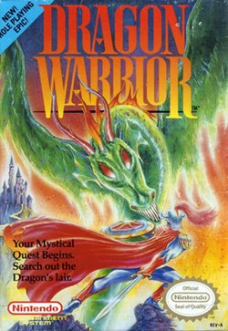

Dragon Quest originally released in Japan in 1986. It was immediately a hit with Japanese audiences. Strangely enough the game was never released over seas until 1989. The game was renamed to "Dragon Warrior" as it seemed that would far better appeal to western audiences. Funnily enough, this release was mere months away from the Japanese release of the fourth game in the series. Western audiences found the game too simple which is fair considering it released alongside games like WonderBoy III and Phantasy Star II. This resulted in the game famously selling terribly in the United States. Certain Nintendo Power Magazines were even giving the game away for free. The game sold a life-time of 500,000 units.
Compared to most JRPGs, this game is very restricting and basic. That makes sense though, as Dragon Quest is usually considered the first JRPG ever made. The game is roughly 10-20 hours long, and all combat is strictly 1v1. There was no party systems or anything, just you and the a single enemy every battle. The game only had a handful of spells, and a very limited variety weapons as well. This resulted in most combat encounters boiling down to spamming the attack button and waiting. The original NES release required you to do quite a lot of grinding for levels. Seemingly to pad out the game's length, though subsequent releases toned down the grinding quite a bit. The gameplay loop is quite addicting, so the grind isn't too obnoxious either way.
It's been almost seven years since I last played this game, so my memory of the story is a bit foggy. Though really there isn't a whole lot to talk about in that regard anyway. The story is pretty basic. You begin with the king asking you to save his daughter, the princess. So you go out and find the princess. Early on you learn of a legendary hero named Erdrick, and you find out you're related to this dude. About half way through the game you come across a Green Dragon who is holding the princess hostage, you save her and take her back to the king. You learn this was the doing of the demon lord so you go to the demon lord's castle and take him out, the end. Like I said, basic. But basic doesn't mean bad. It gets its point across, and serves the game way.
Dragon Warrior was always a special game to me. As a young child it was the only game I had on my iPod Touch. In middle school I would play it over and over on my Samsung Luna. Dragon Warrior was a safe space for me. Growing up was tough for me, but Dragon Warrior was consistent, I could always jump into it and everything would be exactly where I remembered it. In college I gave my first girlfriend's dad a copy of the NES version complete in box. College was fun for me, maybe I should boot up Dragon Warrior again.